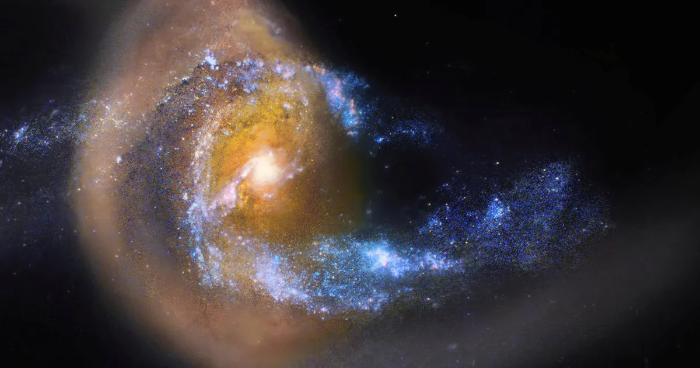

Galaxies spin fast. I mean… really fast. They spin so fast, in fact, that many galaxies should be ripped apart, flinging their matter all across the universe. It’s dark matter that prevents this from happening. Dark matter is the glue of the cosmos, and it keeps nearly everything in the universe together. Now, what if dark matter didn’t exist? Well, as I said before, galaxies would likely fly apart, with stars, gas, and dust no longer held in place by gravity alone. See, dark matter has mass, and that mass has gravity. If dark matter disappeared, a lot of the gravity within galaxies would disappear as well. Stars would be left alone in the universe, drifting through nothingness.

Right after the Big Bang, dark matter was one of the first things to form. As the universe expanded, material began to spread out, but dark matter remained as a scaffold. With its gravity, it pulled normal matter toward it, keeping it in place. Asteroids, planets, stars, galaxies, nebulae, and black holes all clumped together, not solely because of their own gravity, but because dark matter was an invisible force that held together and shaped the structure of the universe. Now, what if the universe had no dark matter? Well, galaxy clusters would cease to exist. The gravity from the galaxies alone wouldn’t be strong enough to keep the clusters together.
The universe would not be a web. It would be a soup of random celestial bodies floating through the emptiness of space. However, not all structure would be lost; solar systems like our own would still form, since the gravity that keeps them together is predominantly due to ordinary matter. But the cosmic web, as shown below, would no longer exist.

No one knows. We know it has mass and makes up 85% of the total matter in the universe. We also know it doesn’t absorb, reflect, or emit light, meaning it’s effectively invisible, but the world’s top scientists are working on it, assuring us that one day we will know. In the meantime, stay curious and tellurian.